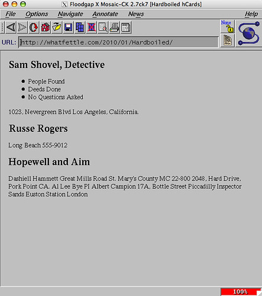
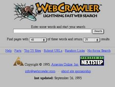

Timeline de Internet
Os proponemos una colección de hitos de internet ordenandos cronológicamente. Échales un vistazo expandiendo cada uno de ellos... Luego te propondremos una pequeña actividad relacionada con ello.
Antecedentes
1969 Arpanet. Conexión entre los Ángeles y San Francisco
1969 Michel Elie, considerado uno de los pioneros de Internet, ingresa en la UCLA (Universidad de California en Los Ángeles) y se incorpora a ARPA con una beca de investigación. A finales de este año se consigue conectar la computadora de la UCLA (Universidad de California en los Ángeles) con otra del SRI (Instituto de Investigación de Stanford), cerca de San Francisco.Unas 360 millas
1971 Envío del primer email
Se envía el primer email. Fue enviado por Ray Tomlinson y el destinatario fue él mismo.
1978: Se envía el primer spam.
El envío masivo de emails. Los destinatarios del primer correo electrónico spam fueron 393 personas de la red ARPANET. El mensaje en cuestión fue enviado por Gary Thuerk.
1985: Se registra el primer dominio
www.symbolics.com.
1991 - 1995 Nacimiento de la web, WWW
Presentación de la web
1991: Aparece las primera página web.
sss
1992: Se sube la primera fotografía a la red.
1993: Se lanza el primer navegador web: Mosaic.
El navegador Mosaic o NCSA Mosaic fue un navegador web gráfico disponible para visualizar páginas web en sistemas operativos como Mac, windows u otros

1994: Se lanza el primer banner.
Apareció en HotWired.com en octubre de 1994 para promocionar 7 museos de arte patrocinados por AT&T.
1994: Nace la primera web de comercio electrónico.
Fue el retailer online NetMarket. Su primer artículo vendido fue una copia del disco “Ten Summoner’s Tales” de Sting.
1994: Nace el primer motor de búsqueda:
WebCrawler.

1995: Se vende el primer producto en Ebay.
Fue un puntero láser cuya venta alcanzó los 14,83 dólares.
1995: Se vende el primer libro en Amazon.
Nace el comercio electrónico como lo conocemos hoy en día
Desarrollo de la web hasta nuestros días
1996: Se lanza el primer teléfono móvil con conexión a internet
: Nokia 9000 Communicator.
2001: Tiene lugar la primer edición de datos de Wikipedia
en Wikipedia. La Wikipedia es la primera enciclopedia en línea escrita de forma colaborativa desde Internet por voluntarios. La mayor parte de los contenidos pueden ser mejorados por cualquier persona que disponga de un navegador web. La Wikipedia también ha revolucionado la forma en que la gente busca la información que necesita, y ha hecho que las enciclopedias de papel de toda la vida vayan decreciendo poco a poco.
2005: Se sube el primer vídeo a YouTube.
Fue subido por el co-fundador de YouTube Jawed Karim.
2006: Se envía el primer tuit.
El 21 de marzo de 2006 Jack Dorsey escribía el que sería el primer tuit: “Just setting up my twttr”.
Una línea del tiempo es un documento gráfico para separar eventos y etapas enmarcados en una variable tiempo y de ese modo delimitar distintos hitos/acontecimientos a lo largo de un proceso temporal